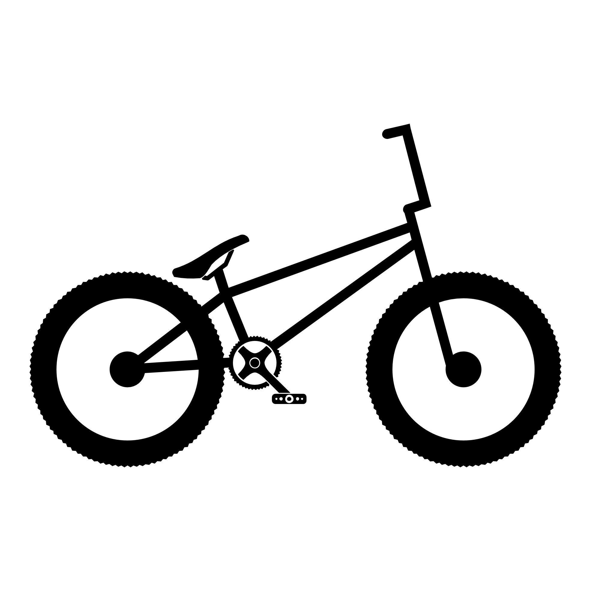
BMX (Bicycle Motor Cross) — где «Cross» на сленге означает «X»
Изначально создавался для гонок по треку, но райдеры быстро открыли его потенциал для экстремальных трюков на улицах
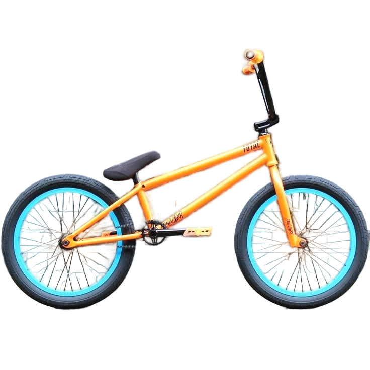
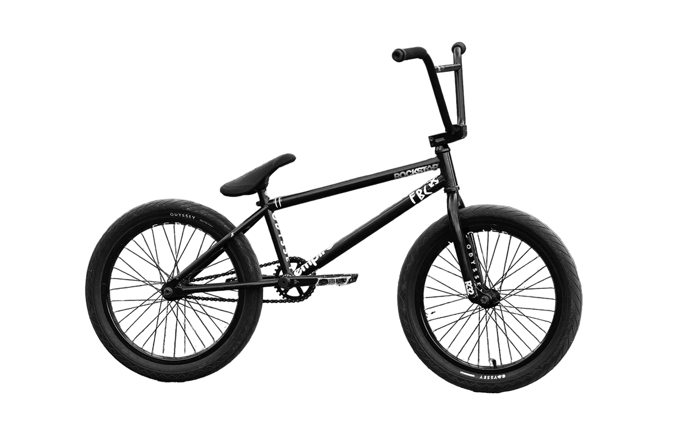
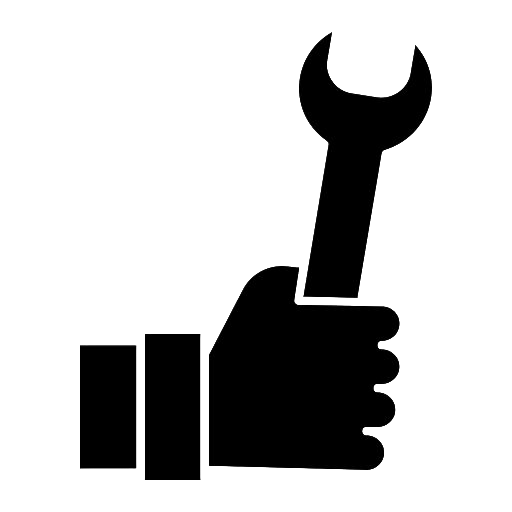
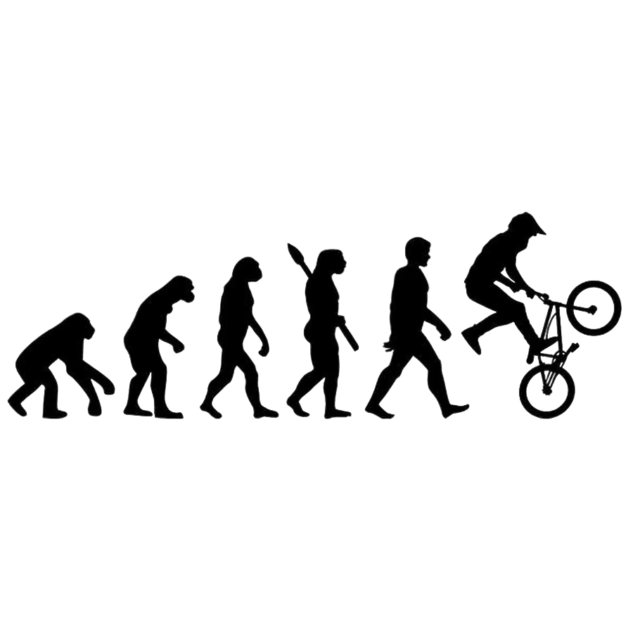
BMX (Bicycle Motocross) — молодой и динамичный спорт, который зародился в Калифорнии в начале 1970-х годов. Дети, чьи отцы и старшие братья увлекались мотокроссом, начали подражать им, используя для этого свои детские велосипеды на тех же грунтовых трассах. Эта детская забава быстро переросла в организованный вид спорта.
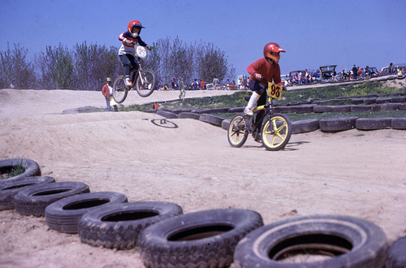
Первой официальной дисциплиной стал BMX Racing — гонки на грунтовых треках с трамплинами и виражами. Популярность рейсинга привела к созданию American Bicycle Association (ABA) в 1977 году для организации соревнований.
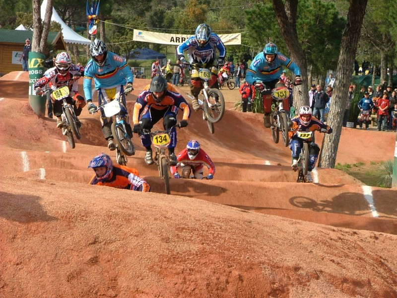
BMX Dirt (Dirt Jumping): Прыжки на сериях земляных трамплинов, где важна амплитуда и сложность трюка.
BMX Street: Катание в городской среде с использованием лестниц, перил, парапетов и других архитектурных элементов. Такие базовые трюки, как Bunny Hop, изначально использовались просто для запрыгивания на бордюр.
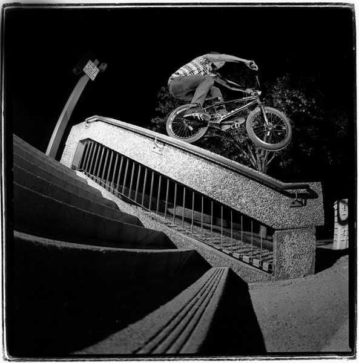
BMX Flatland: Напоминающий танец или цирковое искусство стиль с балансами и вращениями на ровной поверхности.
BMX Vert: Катание в рампе, где райдер набирает высоту для выполнения трюков в воздухе.
BMX Park: Гибридное направление со специальными парками, боулами, фанбоксами и гранями.
Все эти стили объединяются под общим названием BMX Freestyle — «свободный стиль», где главное — творчество райдера.
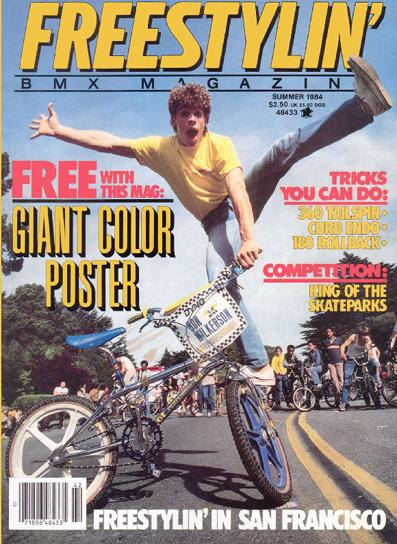
Конец 1970-х: Haro, GT, Mongoose начинают массово производить BMX.
1980-е: Пик Flatland, создание AFA, появление системы тормозов Gyro.
1995: Дебют BMX Freestyle на X-Games.
2008: BMX Racing входит в программу Олимпийских игр в Пекине.
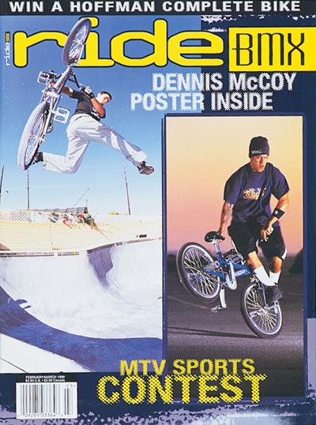
Материалы: переход на Cr-Mo, алюминий и титан.
Конструкция: баттинг, термообработка, усиленные узлы.
Специализация: лёгкие велосипеды для Racing и Flatland, максимально прочные — для Street и Dirt.
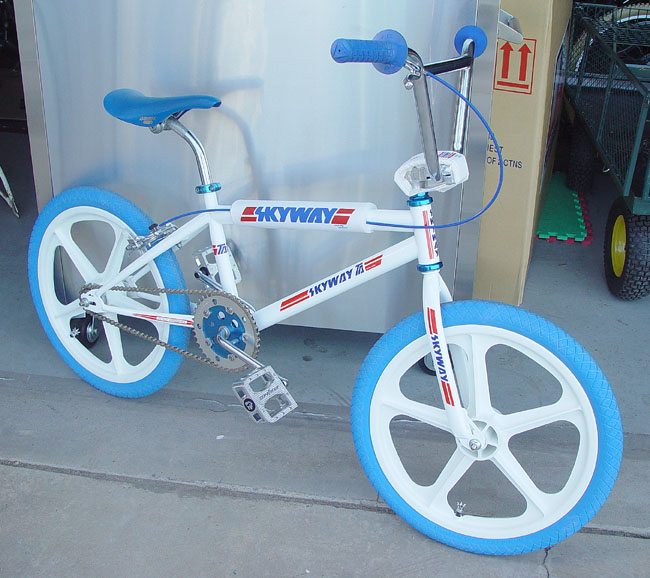
Мэтт Хоффман: основатель Bicycle Stunt, пионер сложнейших трюков Vert.
Дэйв Мирра: рекордсмен X-Games, символ прогресса 1990–2000-х.
Раян Найквист: универсальный райдер с невероятной стабильностью.
Путь BMX — от детских гонок в Калифорнии до олимпийских стадионов — это история свободы, креативности и технологического прогресса.
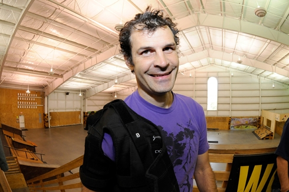
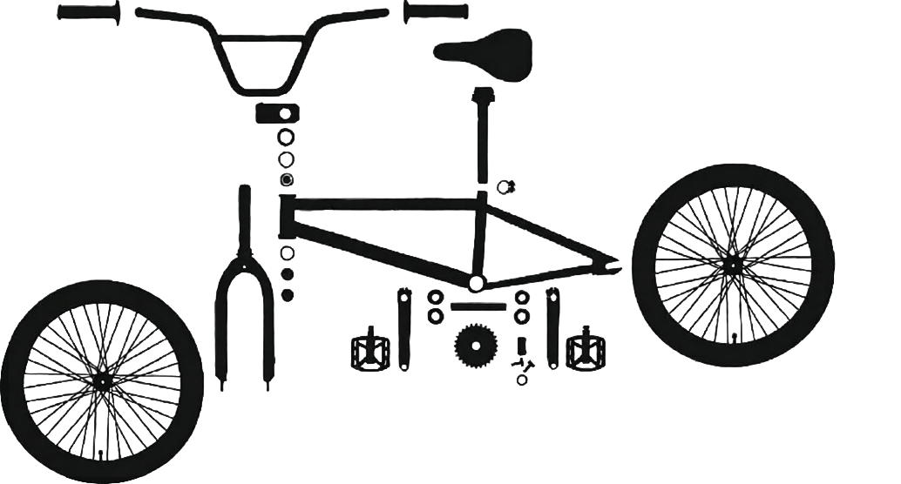
Инструкция по сборке:
Описание детали